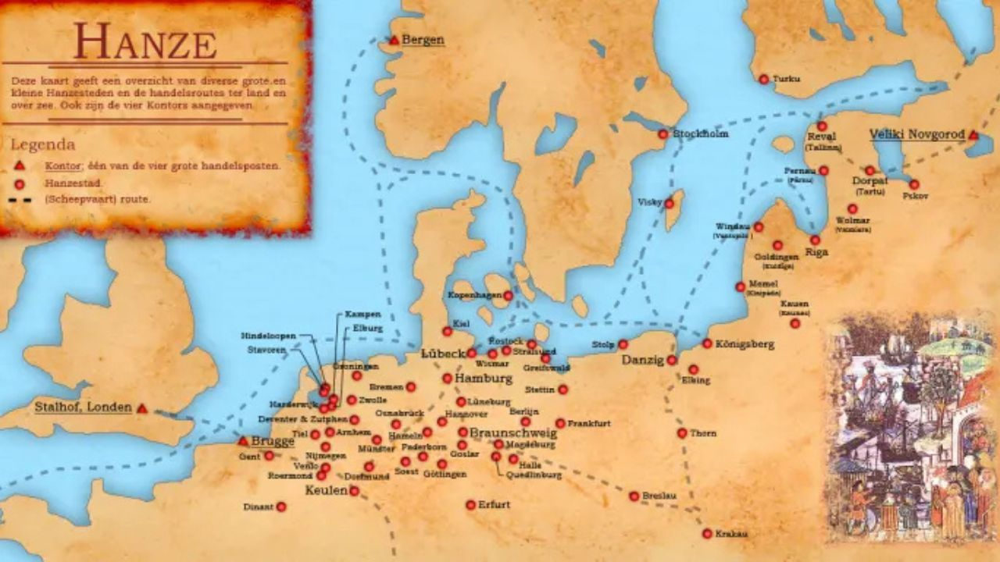

Präsentation
Die Hanse ist ein Bund von Kaufleuten und nordeuropäischen Städten. Sie beginnt im 12. Jahrhundert und endet im 17. Jahrhundert. Sie befindet sich an den Küsten der Nord- und Ostsee bis in die Mitte Deutschlands. Sie hat etwa 200 Mitgliedsstädte.

Ziele und Funktionsweise
Die Hanse hat viele Ziele. Sie erlaubt den Städten, sich zu entwickeln. Kaufleute schließen sich zusammen, um sich gegenseitig gegen Piraten zu schützen und um Geld zu verdienen. Sie segeln in kleinen Gruppen mit Schiffen. Die Städte arbeiten zusammen und organisieren den Transport von Waren und den Handel.

Sein großer Erfolg
Die Hanse hat einen mächtigen und starken Erfolg im Mittelalter, weil sie den Handel kontrolliert und viele Städte reich macht. Sie erlaubt den Städten, sich zu entwickeln, wie zum Beispiel Lübeck, Bremen und Hamburg, und ermöglicht den Kaufleuten, großen Reichtum zu erlangen.

Und Lübeck?
Lübeck ist eine der wichtigsten Städte der Hanse. Sie spielt eine zentrale Rolle im Handel der Hanse und trägt den Spitznamen „Königin der Hanse“. Sie ist ein typisches Beispiel für eine hansische Stadt. Sie ist UNESCO-Welterbe, weil sie die wirtschaftliche Macht der Hanse repräsentiert und die Geschichte der Hanse widerspiegelt.

Der Niedergang des Bundes
Dann verliert die Hanse ihre führende Rolle zwischen dem 15. und dem 17. Jahrhundert. Sie geht unter wegen der Konkurrenz durch neue Handelsrouten und durch Länder wie England und die Niederlande, die stärker werden.